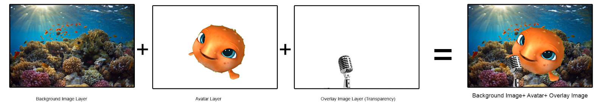
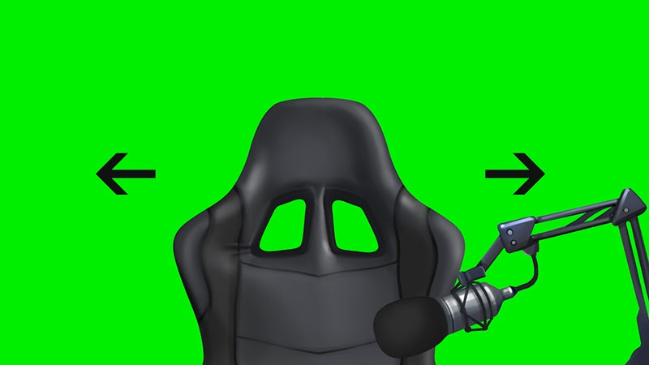
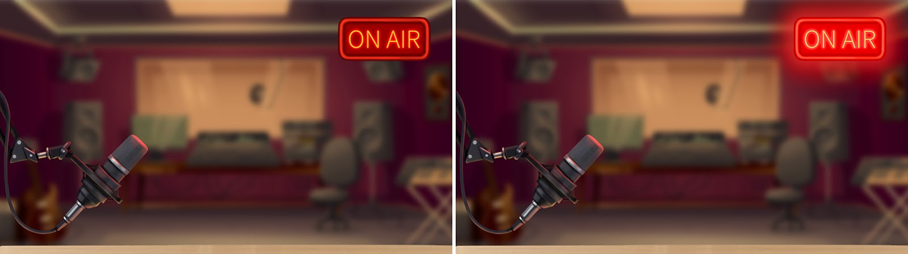

Getting started with backgrounds with overlays (2D)
Starting with Feb 11’th, 2020, Animaze supports Backgrounds with Overlays.
You can think of these as "2d image sandwiches", where you have the two “slices of bread”, one being a background image and the other an overlay image (with a transparency channel), and the avatar is the center layer.

Those two images (background and overlay) can be any regular (static) 2D image, or, for added flair, they can be Live2D models that support animations.
The Live2D path opens up a lot of exciting options, but you do need to know how to use the artist tools from Live2D (the Cubism Editor and Live2D Viewer - both come together with the Live2D Package).
With Live2D you can have for instance:
- Looping idle animation.
- Animation that is live-linked to tracking data.

- Animation triggered by key binds

These are just 3 simple examples put together for teaching purposes. You can build any combination of the above to really turbo-charge your avatar experience.
You can also download these examples both as Live2D source files, to see how they were built, and as *.avatar files, to see how they were configured in the Animaze Editor, here.
So how exactly does one create such an asset? Check out the other sections of this manual, as they describe the what you have to do, step by step.